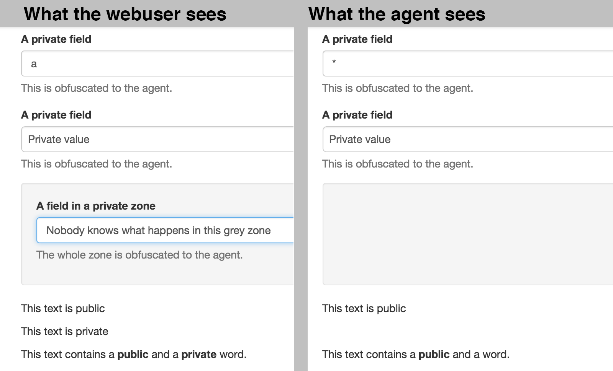

Mask personally identifiable information (PII) from agents while cobrowsing.
What is the Cobrowse Masking feature?
Co-browsing allows agents to see web users' pages. Some of the content displayed may be sensitive data. Agents should not be able to see or interfere with this specific content.
Use a specific class to cloak DOM elements to the cobrowse engine.

Please try our demo
Usage
Hiding zones or fields
To hide a field or a zone, please add the videodesk-cobrowse-mask class to any element.
In this case, the word 'p4ssw0rd' will be hidden.
<div>
Please note that your password is
<span class="videodesk-cobrowse-mask">p4ssw0rd</span>
</div>
In this case, the whole address will be hidden.
<div>
Our product will be shipped to
<address class="videodesk-cobrowse-mask">
Mozilla Foundation<br>
1981 Landings Drive<br>
Building K<br>
Mountain View, CA 94043-0801<br>
USA
</address>
</div>
You can add this class to any form element too. In this case, only the question about pets will be displayed to the agent.
<p>Who did you vote for ?</p>
<select class="videodesk-cobrowse-mask">
<option>George W Bush</option>
<option>Al Gore</option>
<option>I did not vote</option>
</div>
<p>Why ?</p>
<input type="text" class="videodesk-cobrowse-mask">
<p>What is your favorite pet ?</p>
<input type="text">
<input type="submit" class="videodesk-cobrowse-mask" value="Send form">
Let the user know
To reassure the webuser, you may want to explicitly point out the zones that are not displayed to the agent. To achieve this, use the .videodesk-cobrowse-masking-marker and .videodesk-cobrowse-masking-marker-enabled classes.
.videodesk-cobrowse-masking-marker {
display: none;
}
.videodesk-cobrowse-masking-marker-enabled {
display: block;
}
In your html it should look like this
<input type="text" class="videodesk-cobrowse-mask">
<p class="videodesk-cobrowse-masking-marker">
The agent will not be able to read the value displayed in the
field above.
</p>
The form below gives an example of what you can do. Toggle the display by clicking here.
Custom rules
If you want to add more custom masking rules, please just add this JavaScript
snippet to your page or any of your script:
on a _vdk.cobrowse_masking object, set the URL of the page and then an
array of objects that you would like to hide.
_vdk.cobrowse_masking = {
"http://www.mywebsite.com/checkout.php": ["#private"]
};